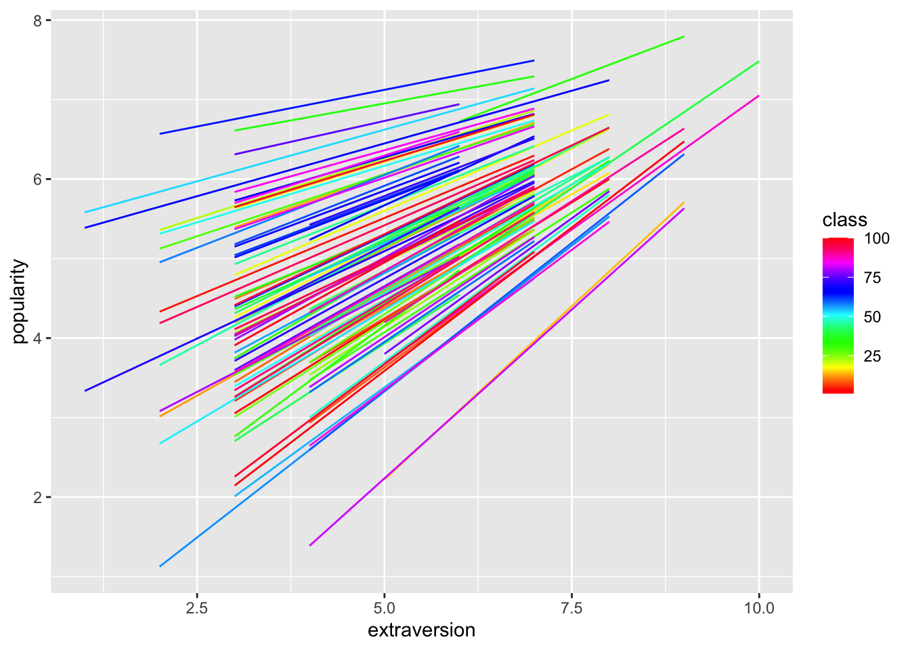
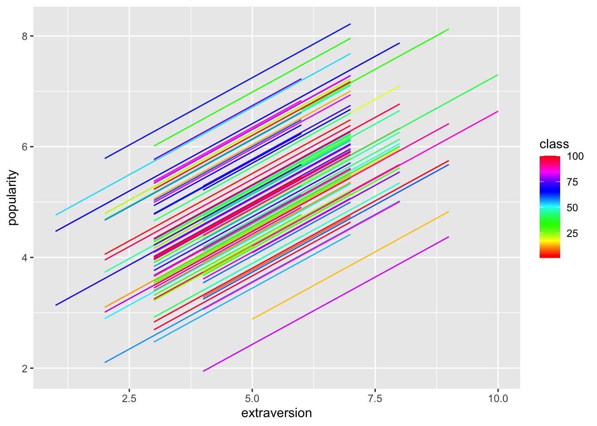
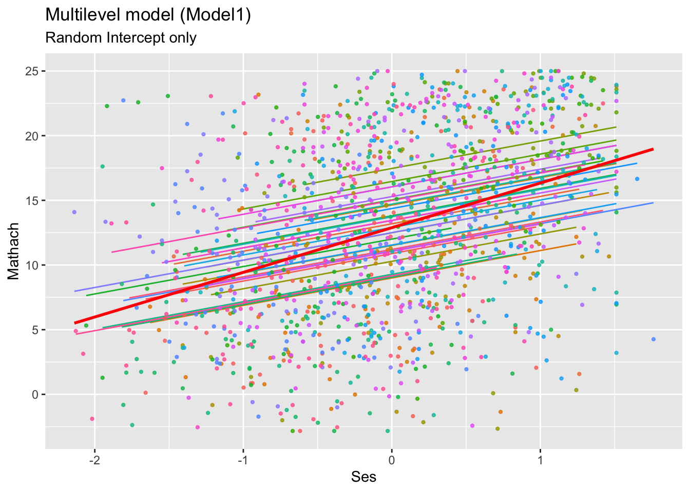
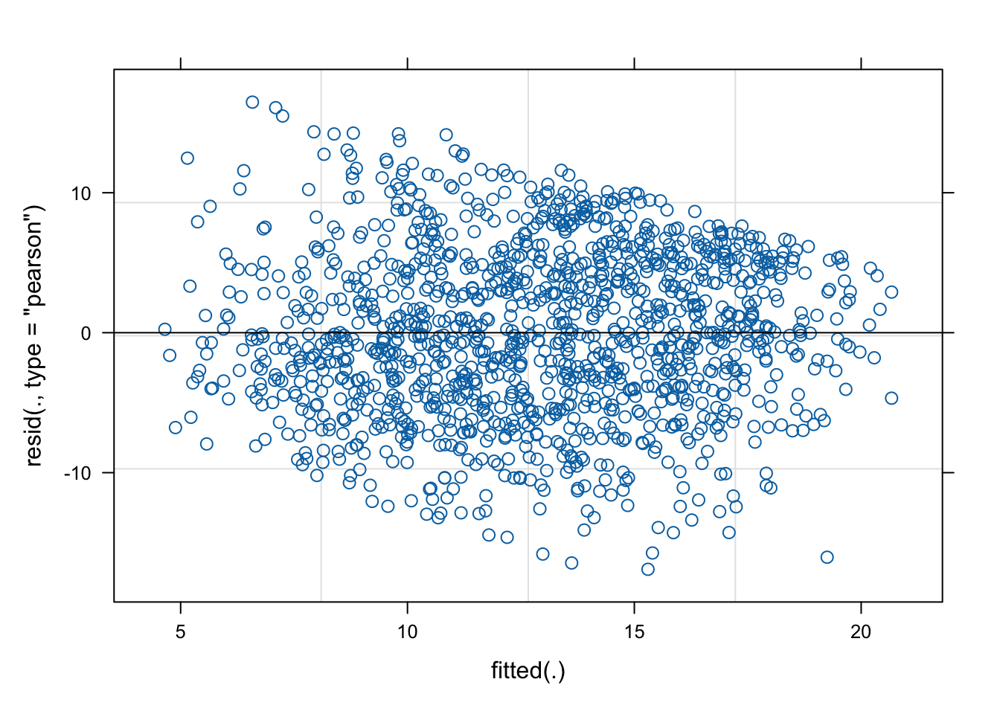
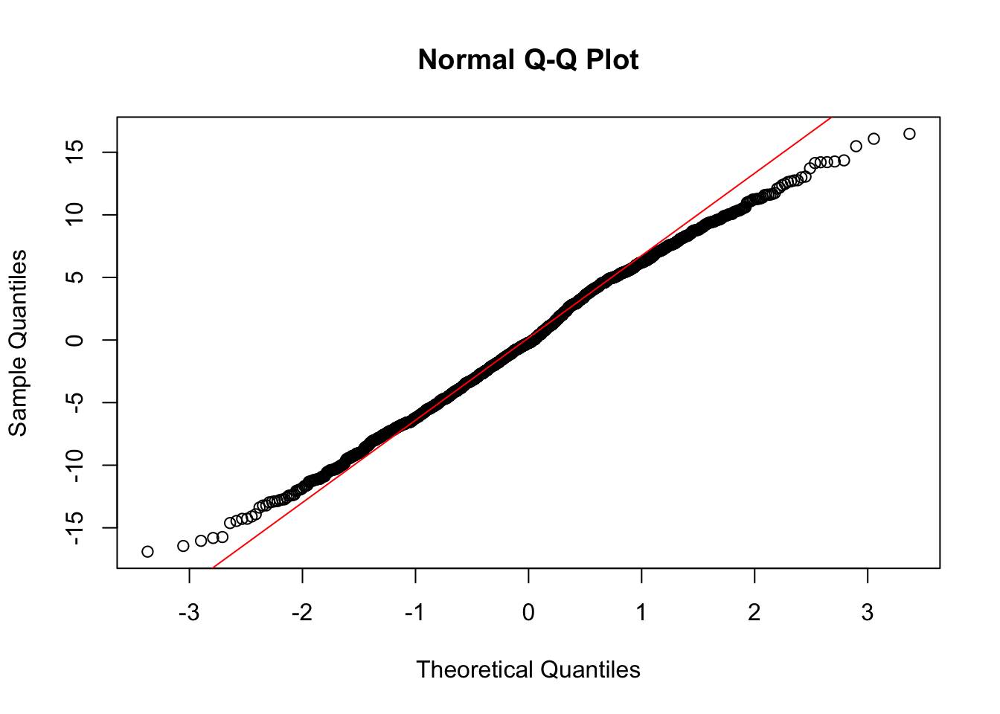
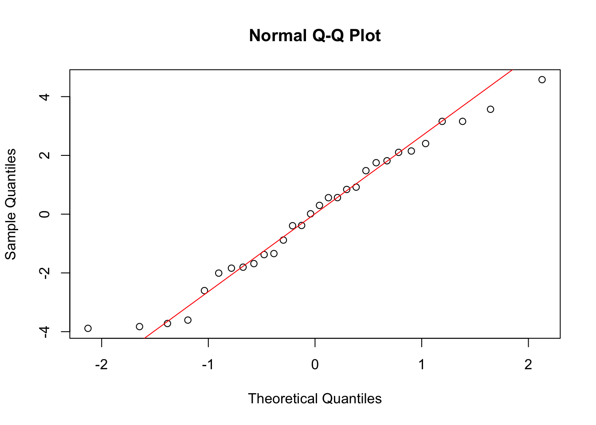
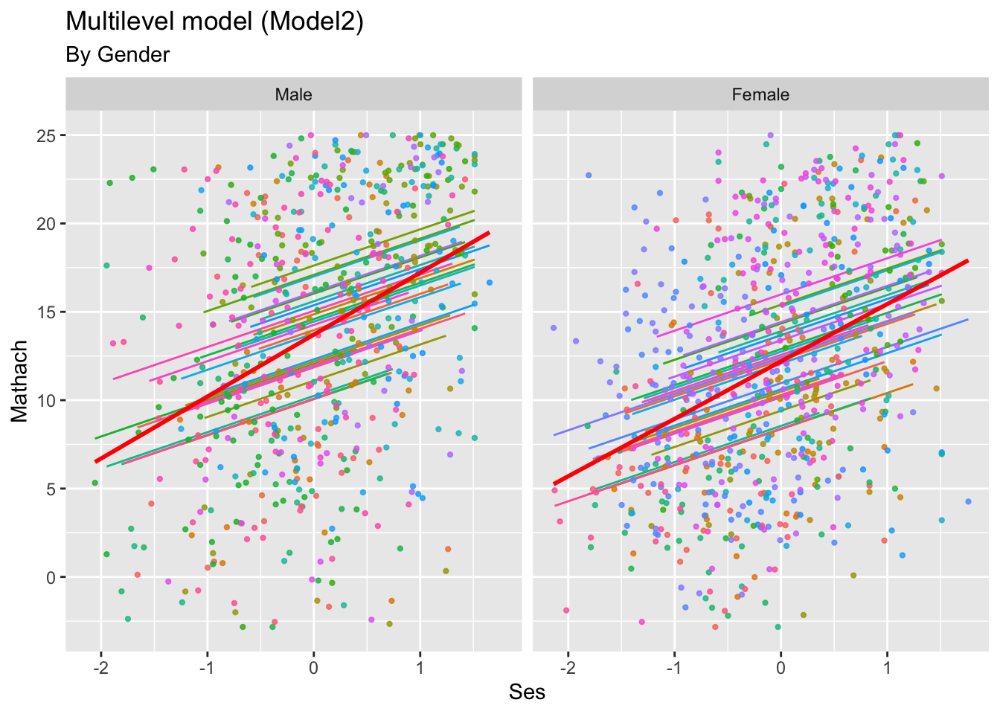

3 Multilevel Modelling Practical 3 (Week 4)
3.1 Instructions – start here!
Exercise 1 takes you through the analysis carried out in Lecture 4 of this module. Exercise 2 allows you to produce some additional analysis using the 1982 High School and Beyond Survey data introduced in the previous practical.
We initially load the R packages haven, ggplot2, lme4 and lmerTest. Further R packages will be loaded where needed.
3.2 Exercise 1
This is a continuation of Exercise 1 from the previous practical. Last week, we considered an exploratory analysis of the student popularity data set. We will now consider a two-level multilevel model for the response variable (popularity, \(y\)) using the extraversion covariate (\(x\)).
3.2.1 Preparation of the data set
We prepare the data as previously:
pop.rawdata <-
read_sav(file="https://github.com/MultiLevelAnalysis/Datasets-third-edition-Multilevel-book/blob/master/chapter%202/popularity/SPSS/popular2.sav?raw=true")Re-label some columns as before:
pop.data <- pop.rawdata[,c("pupil", "class", "extrav", "sex", "texp", "popular")]
colnames(pop.data)<- c("pupil", "class", "extraversion", "gender", "experience", "popularity")
head(pop.data) # we have a look at the first 6 observations## # A tibble: 6 × 6
## pupil class extraversion gender experience popularity
## <dbl> <dbl> <dbl> <dbl+lbl> <dbl> <dbl>
## 1 1 1 5 1 [girl] 24 6.3
## 2 2 1 7 0 [boy] 24 4.9
## 3 3 1 4 1 [girl] 24 5.3
## 4 4 1 3 1 [girl] 24 4.7
## 5 5 1 5 1 [girl] 24 6
## 6 6 1 4 0 [boy] 24 4.7\(~\)
3.2.2 Fitting the random intercept and slope model
The model takes the form
\[y_{ij}=a + b x_{ij} + u_j +v_j x_{ij} +\epsilon_{ij} \] where \(u_j\sim N(0,\sigma^2_u)\), \(v_j \sim N(0,\sigma^2_v)\) and the independent error terms are \(\epsilon_{ij} \sim N(0,\sigma^2)\).
The following is the code to fit a random intercept and slope model (and summarise):
## Warning in checkConv(attr(opt, "derivs"), opt$par, ctrl = control$checkConv, : Model failed to converge with
## max|grad| = 0.00663866 (tol = 0.002, component 1)## Linear mixed model fit by REML. t-tests use Satterthwaite's method ['lmerModLmerTest']
## Formula: popularity ~ 1 + extraversion + (1 + extraversion | class)
## Data: pop.data
##
## REML criterion at convergence: 5779.4
##
## Scaled residuals:
## Min 1Q Median 3Q Max
## -3.1961 -0.7291 0.0145 0.6817 3.2216
##
## Random effects:
## Groups Name Variance Std.Dev. Corr
## class (Intercept) 2.99680 1.7311
## extraversion 0.02595 0.1611 -0.97
## Residual 0.89495 0.9460
## Number of obs: 2000, groups: class, 100
##
## Fixed effects:
## Estimate Std. Error df t value Pr(>|t|)
## (Intercept) 2.46106 0.20309 96.71010 12.12 <2e-16 ***
## extraversion 0.49286 0.02545 89.75489 19.36 <2e-16 ***
## ---
## Signif. codes: 0 '***' 0.001 '**' 0.01 '*' 0.05 '.' 0.1 ' ' 1
##
## Correlation of Fixed Effects:
## (Intr)
## extraversin -0.917
## optimizer (nloptwrap) convergence code: 0 (OK)
## Model failed to converge with max|grad| = 0.00663866 (tol = 0.002, component 1)Note the warning message about potential lack of convergence. A better optimiser should solve this issue:
model1 <- lmer(formula = popularity ~ 1+ extraversion +(1+ extraversion|class), data = pop.data, control = lmerControl(optimizer ="Nelder_Mead"))
summary(model1)If you execute the above code chunk, you’ll see that the difference in estimated coefficients is very small (typically 4th decimal place) making us less concerned about the initial warning.
TASK: Interpret the summarised model output.
Click for solution
- The expected popularity rises by 0.49286 per extra point of extraversion.
- There is considerable variation between classes: The random effect variances are \(\sigma^2_u=2.9968\) and \(\sigma^2_v=0.02595\).
- The random effects are strongly negatively correlated (-0.97): For classes where the popularity is generally larger, increasing extraversion will have less additional effect.
\(~\)
3.2.3 Fitted lines by class
The following R code plots the fitted regression lines for each class.
pop.data$pred1 <- predict(model1)
ggplot(pop.data,
aes(x= extraversion, y = popularity, col = class, group = class))+
geom_line(aes(y=pred1, group=class, col=class)) +
scale_color_gradientn(colours = rainbow(100)) 
TASK: Predicted values are given by
\[\hat{y}_{ij}=\hat{a}+\hat{b}x_{ij}+\hat{u}_j+\hat{v}_jx_{ij}\].
The first fitted value is \(\hat{y}_{11}=\) 5.1311949. By using fixef to extract the fixed effects \(\hat{a}\) and \(\hat{b}\), and ranef to extract the random effects \(\hat{u}_1\) and \(\hat{v}_1\), directly calculate \(\hat{y}_{11}\) and make sure it agrees with the above value.
Click for solution
fix <- as.numeric(fixef(model1))
ranef1 <- as.numeric(ranef(model1)$class[1,])
newx <- c(1, pop.data$extraversion[1])
fix%*%newx +ranef1%*%newx## [,1]
## [1,] 5.131195\(~\)
3.2.4 The intercept-only / empty model and ICC
Recall that the empty model is
\[y_{ij}=\gamma_0 + u_j +\epsilon_{ij}\]
The following code fits the empty model and summarises output.
intercept.only.model <- lmer(formula = popularity ~ 1 + (1|class),data = pop.data)
summary(intercept.only.model) ## Linear mixed model fit by REML. t-tests use Satterthwaite's method ['lmerModLmerTest']
## Formula: popularity ~ 1 + (1 | class)
## Data: pop.data
##
## REML criterion at convergence: 6330.5
##
## Scaled residuals:
## Min 1Q Median 3Q Max
## -3.5655 -0.6975 0.0020 0.6758 3.3175
##
## Random effects:
## Groups Name Variance Std.Dev.
## class (Intercept) 0.7021 0.8379
## Residual 1.2218 1.1053
## Number of obs: 2000, groups: class, 100
##
## Fixed effects:
## Estimate Std. Error df t value Pr(>|t|)
## (Intercept) 5.07786 0.08739 98.90973 58.1 <2e-16 ***
## ---
## Signif. codes: 0 '***' 0.001 '**' 0.01 '*' 0.05 '.' 0.1 ' ' 1TASK: Calculate and interpret the intra-class correlation (ICC).
Click for solution
Method 1: read off the estimates of \(\sigma^2_u\) and \(\sigma^2\) from the output above.
## [1] 0.3649358Method 2: extract the relevant estimates directly:
## [1] 0.3649386Method 3: the following package can also be used to calculate ICC.
require(performance)
# https://easystats.github.io/performance/reference/icc.html
icc(intercept.only.model)## # Intraclass Correlation Coefficient
##
## Adjusted ICC: 0.365
## Unadjusted ICC: 0.365\(~\)
3.2.5 The random intercept model (with covariate)
Now let’s look at the random intercept model with a fixed effect for extraversion. The model is
\[y_{ij}=a+b x_{ij}+u_j+\epsilon_{ij}\]
We can fit and summarise via:
## Linear mixed model fit by REML. t-tests use Satterthwaite's method ['lmerModLmerTest']
## Formula: popularity ~ 1 + extraversion + (1 | class)
## Data: pop.data
##
## REML criterion at convergence: 5832.6
##
## Scaled residuals:
## Min 1Q Median 3Q Max
## -3.0644 -0.7267 0.0165 0.7088 3.3587
##
## Random effects:
## Groups Name Variance Std.Dev.
## class (Intercept) 0.8406 0.9168
## Residual 0.9304 0.9646
## Number of obs: 2000, groups: class, 100
##
## Fixed effects:
## Estimate Std. Error df t value Pr(>|t|)
## (Intercept) 2.542e+00 1.411e-01 4.380e+02 18.01 <2e-16 ***
## extraversion 4.863e-01 2.015e-02 1.965e+03 24.13 <2e-16 ***
## ---
## Signif. codes: 0 '***' 0.001 '**' 0.01 '*' 0.05 '.' 0.1 ' ' 1
##
## Correlation of Fixed Effects:
## (Intr)
## extraversin -0.745TASK: Add a column to the pop.data data frame called pred0 containing the predicted responses from this model. Hence, produce a plot of the regression lines (obtained from this model) for each class (also coloured by class).
Click for solution
The following R code generates predicred responses and plots the fitted regression lines for each class.
pop.data$pred0 <- predict(model0)
ggplot(pop.data,
aes(x= extraversion, y = popularity, col = class, group = class))+
geom_line(aes(y=pred0, group=class, col=class)) +
scale_color_gradientn(colours = rainbow(100)) 
Notice that all the slopes are the same, as expected! Whether or not random slopes are needed (and how we decide this) will be explored later in the course.\(~\)
Harder (deeper thinking): please spend at least 15 mins thinking about the following before uncovering the solution details (talk also to each other and the instructor about it).
We have a class level covariate - teacher experience. How can we include this in the model above (random intercept model)? One possibility is to try to use this covariate to explain some of the variation in the random intercept values.
The random intercept model has \(a_j=a+u_j\) where \(u_j\sim N(0,\sigma^2_u)\). Let \(\text{exp}_j\) denote teacher experience (in years) for class \(j\). How should we modify \(a_j\) to include the \(\text{exp}\) covariate? Write out the resulting model in the form \(y_{ij}= \ldots\) and fit the model in R. Is the experience covariate needed?
Click for solution
“Regress” the \(a_j\) on \(\text{exp}\) to give
\[a_j = a + \alpha \text{exp}_j +u_j\] where \(u_j\sim N(0,\sigma^2_u)\). Hence, the full model becomes
\[y_{ij}=a +\alpha \text{exp}_j + b x_{ij} + u_j + \epsilon_{ij} \] We can fit this model in R via:
model2 <- lmer(formula = popularity ~ 1+ extraversion + experience +(1|class), data = pop.data)
summary(model2)## Linear mixed model fit by REML. t-tests use Satterthwaite's method ['lmerModLmerTest']
## Formula: popularity ~ 1 + extraversion + experience + (1 | class)
## Data: pop.data
##
## REML criterion at convergence: 5776.2
##
## Scaled residuals:
## Min 1Q Median 3Q Max
## -3.2000 -0.7193 0.0211 0.6995 3.3732
##
## Random effects:
## Groups Name Variance Std.Dev.
## class (Intercept) 0.4251 0.6520
## Residual 0.9303 0.9645
## Number of obs: 2000, groups: class, 100
##
## Fixed effects:
## Estimate Std. Error df t value Pr(>|t|)
## (Intercept) 1.035e+00 2.076e-01 2.381e+02 4.985 1.19e-06 ***
## extraversion 5.037e-01 2.017e-02 1.962e+03 24.976 < 2e-16 ***
## experience 9.910e-02 1.056e-02 1.018e+02 9.385 1.90e-15 ***
## ---
## Signif. codes: 0 '***' 0.001 '**' 0.01 '*' 0.05 '.' 0.1 ' ' 1
##
## Correlation of Fixed Effects:
## (Intr) extrvr
## extraversin -0.610
## experience -0.799 0.142\(~\)
Even deeper: The random intercept and slope model has \(b_j=b+v_j\) where \(v_j\sim N(0,\sigma^2_v)\). How should we modify \(b_j\) to include the \(\text{exp}\) covariate? Write out the resulting model in the form \(y_{ij}= \ldots\). If done correctly, this should give an interaction term of the form \(\text{exp}_j x_{ij}\).
\(~\)
3.3 Exercise 2
3.3.1 Preparation
This is a continuation of Exercise 3 from the previous practical.
We continue now with the analysis of the Maths achievement scores from the 1982 High School and Beyond Survey. As on the last worksheet, load the data into your workspace via:
Carry out the following operations for simple access of variables.
data <- sub_hsb
mathach <- data$mathach # Maths achievement score (response)
ses <- data$ses
female <- data$female
school.f <- as.factor(data$schid) #I'm using .f for factor in the variable name
colnames(data)## [1] "schid" "minority" "female" "ses" "mathach" "size" "schtype" "meanses"Recall that the full dataset can be found within the package merTools. Click the link to read about the data set.
\(~\)
3.3.2 The random intercept model
As in Exercise 1, to specify random effects, apply the same formula as that for linear regression using the function lmer instead of lm. We begin with the random intercept model, including a fixed effect for ses (a measure of socio-economic status).
A random intercept for the upper level (in this case, school) will be coded as (1|school.f).
## Linear mixed model fit by REML. t-tests use Satterthwaite's method ['lmerModLmerTest']
## Formula: mathach ~ ses + (1 | school.f)
## Data: data
##
## REML criterion at convergence: 8601
##
## Scaled residuals:
## Min 1Q Median 3Q Max
## -2.81268 -0.70959 -0.03616 0.76678 2.74101
##
## Random effects:
## Groups Name Variance Std.Dev.
## school.f (Intercept) 6.339 2.518
## Residual 36.119 6.010
## Number of obs: 1329, groups: school.f, 30
##
## Fixed effects:
## Estimate Std. Error df t value Pr(>|t|)
## (Intercept) 12.8865 0.4908 26.4805 26.256 <2e-16 ***
## ses 2.1202 0.2536 1234.9858 8.359 <2e-16 ***
## ---
## Signif. codes: 0 '***' 0.001 '**' 0.01 '*' 0.05 '.' 0.1 ' ' 1
##
## Correlation of Fixed Effects:
## (Intr)
## ses -0.010TASK: Interpret the output, find the ICC.
\(~\)
We now extract and visualize fitted values vs. the linear model: to do this with ggplot, add the main plot (ggplot(...)) including a line (geom_line()) indicating the predictions acquired from predict(Model1) and the grouping structure (school). Note that geom_point() includes the data points for reference.
data$pred1 <- predict(model.rint)
model1_int <- ggplot(data, aes(ses,mathach))+
geom_line(aes(y=pred1,group=school.f,
col=school.f))+
geom_point(aes(ses,mathach,
col=school.f),
size = 0.8,
alpha = .8)+
geom_smooth(method="lm",
se=FALSE,
col="Red")+
ggtitle("Multilevel model (Model1)",
subtitle="Random Intercept only") +
xlab("Ses") +
ylab("Mathach")+
theme(legend.position = "none")
model1_int
The results of the above regression illustrate the importance of accounting for a multilevel structure. It is evident that had we used a simple linear regression (red line), we would have inadvertently overestimated the mean effect of ses. This is also easy to see by inspecting the model summary of the linear model, where ses has a coefficient of 3.45 while in the multilevel specification a coefficient of 2.12 with a random intercept variance that is considerably greater than zero with a value of 6.33.
\(~\)
3.3.3 Diagnostics
Now we visualise results and conduct some diagnostic checks, in order to check for the adequacy of modelling assumptions. ALthough we have not (up until now) considered diagnostics in the multilevel context, we proceed as in the linear regression case, by checking normality of residuals and additionally, normality of the random effects!
We start by plotting the residuals vs the fitted values.

Ideally, we should see here just random noise, that is no pattern at all. This is reasonably fulfilled, however there is impression of a diagonal field-like shape spanning from the top left to the bottom right. This likely indicates that a predictor variable which would have explained this slope has been omitted.
\(~\)
Continue with inspection of model assumptions by looking at quantile-quantile plots for the residuals and random effects:

qqnorm(ranef(model.rint)$school.f[,1]) # check random effects
qqline(ranef(model.rint)$school.f[,1],
col = "red")
The QQ plots also look fairly acceptable (close to y=x line), indicating that the assumption of normality of the error terms and of the random effects is reasonably fulfilled.
\(~\)
3.3.4 Include a second fixed effect variable: gender
We will now perform multilevel modelling using random intercepts, this time including the dummy variable for female:
model2.rint <- lmer(mathach ~ ses + female + (1 | school.f), data=data)
#summary(model2.rint) #uncomment if you'd like to interogate the model output\(~\)
We will plot the fitted values, categorised by gender. We want two plots, side-by-side, showing the fitted lines for each school.
data$pred2 <- predict(model2.rint)
gender_names <- c("0" ="Male","1"="Female") #define labels for facet_grid
model2_int <- ggplot(data,aes(ses,mathach))+
geom_line(aes(y=pred2,group=school.f, col=school.f))+
geom_point(aes(ses,mathach, col=school.f),
size = 0.8,
alpha = .8)+
geom_smooth(method="lm",
se=FALSE, col="Red")+
ggtitle("Multilevel model (Model2)",
subtitle="By Gender") +
facet_grid(~female,
labeller = as_labeller(gender_names))+
xlab("Ses") +
ylab("Mathach")+
theme(legend.position = "none")
model2_int There is a lot going on here! Try to understand each line, and what is being plotted. Consider writing out the mathematical form of the model, or discuss with each other / the instructor as to what this form takes.
** End of lab!